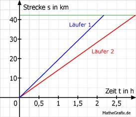

Lineare Funktionen Aufgabe 103 Die Marathonstrecke ist 42,195 km lang. Läufer 1 schafft sie in 2 h 58 min 50 s. Läufer 2 in 2 h 10 min 11 s. a) Berechnen Sie die Geschwindigkeiten der beiden Läufer in km/h. b) Wie viel km muss Läufer 2 noch laufen, wenn Läufer 1 im Ziel ist? c) Nach wie viel Stunden liegen die beiden Läufer 8 km auseinander? a) 58 50 2 h 58 min 50 s = 2 h + ----- h + ------- h = 2 h + 0,97 h + 0,014 = 60 3600 = 2,98 h 10 11 2 h 10 min 11 s = 2 h + ----- h + ------- h = 2 h + 0,17 h + 0,003 h 60 3600 = 2,17 h 42,195 km v1 = ------------- = 19,44 km/h 2,17 h 42,195 km v2 = ------------- = 14,16 km/h 2,98 h  b) 2 h 10 min 11 s = 2 h + 10/60 h + 11/3600 h = 2,17 h Der Läufer 2 legt in der Zeit, in der Läufer 1 im Ziel ist, : s2 = 14,16 km/h * 2,17 h = 30,727 km zurück. Er muss bis zum Ziel noch 42,195 km - 30,727 km = 11,468 km zurücklegen. c) 19,44 * x - 14,16 * x = 8 5,28 * x = 8 | :5,28 x = 1,52 h